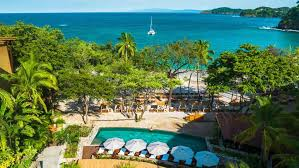
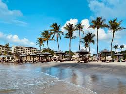

Don't remember too much other than being in a BIG vacation house and playing on my 3DS. I remember my family yapping about seeing a whale jump out the water, so that's pretty cool. I would go back if not for the current political climate of the drug cartels, Trump's deportations, and overall a sense of unrest there.
Very hot. Lots of water. Went here when Covid started shutting down airlines, but thankfully my family got out of there in time. Had a habache in our apartment once, and one of my family members got drunk. Like, so drunk that they somehow became impossibly productive at stuff like getting groceries. Pretty cool overall. Wouldn't come back because of extrmely high prices.

Best vacation spot I've been to. Big fan of the "all in one" deal where you pay once for a weeks stay at an awesome resort with pools and slides and buffets and dinners. Best part though for me was the small corner that was a caffinated paradise. It literally had EVERYRTHING like caf and de-caf options, multiple cream and sugar options, and straight up wine-bottles worth of caramel and chocolate extract. All of it free by the way once you get in the hotel. Honestly worst part about this place is that I've been to it three times, so I already experienced everything there, so I got pretty homesick after a while.
